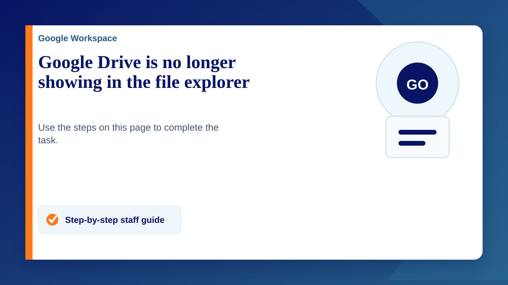

Your Google Drive files can be accessed through the browser but if you're working on a desktop computer you may find it quicker to access them through Windows file explorer. Below are a few common issues.
Google Drive showing but can't access files
This can happen for any number of reasons but it's usually very quick to fix:
- Click on the windows menu
- Type in "Google Drive" - If you can't find it follow the section below to install it
- Click on "Google Drive"
- It is likely to look like nothing has happened but hopefully, you will now be able to access the files. If not, continue to the next steps.
- Click on the arrow next to the clock in the bottom right corner and then double click on the Google Drive icon.
- When prompted, enter your Google account details (it may have these already from your browser) and accept the permissions
Google Drive is not installed
You shouldn't normally need this step as your desktop PC should have it installed but it's useful to know if you need to use another computer (Remote work etc)
- Download Google Drive for desktop from Google Drive Help.
- Open the installer and follow the on-screen instructions.
- Submit a ticket to the service desk if you have any issues.